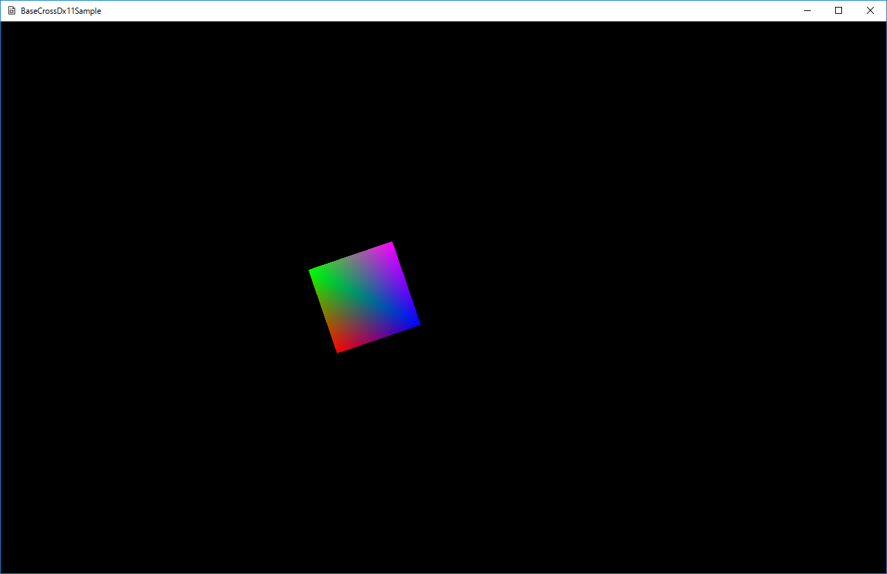

００３．四角形の回転と移動(Dx12版)
このサンプルは
SimplSample003というディレクトリに含まれます。
BaseCrossDx12.slnというソリューションを開くと
Dx12版が起動します。
どちらのソリューションでも、実行結果は以下のような画面が出ます。単純な四角形が回転しながら左右に移動します。

図0003a
動画は以下になります。
【共通解説】
Dx12、Dx11両方に共通なのは
シェーダーです。
DxSharedプロジェクト内に
シェーダファイルというフィルタがあり、そこに記述されてます。
今回使用するシェーダは
頂点シェーダとピクセルシェーダです。
VertexPositionColor型の頂点を持ち、
コンスタントバッファからの入力で、位置を変更させています。
SimpleSample002と同じシェーダです。
また
更新処理も共通になります。
SquareSprite::OnUpdate関数には、四角形が左右に移動しながら回転する記述がされています。
【Dx12版解説】
BaseCrossDx12.slnを開くと、
BaseCrossDx12というメインプロジェクトがあります。この中の
Character.h/cppが主な記述個所になります。
オブジェクトのクラスは
SquareSpriteクラスです。
■初期化■
初期化は
SquareSprite::OnCreate関数から呼ばれます。
ここではまず、
頂点の配列を作成し、そこからメッシュを作成しています。今回のメッシュには
インデックスバッファが含まれます。前サンプルでは、描画は三角形を一つ描画しただけなので頂点を使って描画しましたが、ここからのサンプルでは、ほとんどのケースで
インデックス描画をします。
インデックス描画というのは
頂点に番号を付けて、その番号を使って連続した三角形を定義し（これを
インデックスといいます）、そのインデックスを使って描画します。頂点を使って直接描画するより効率がよくなります。
そのため、ここでの初期化処理では、
頂点を作成したあと
インデックスを作成しています。
頂点の数は４つです。その4つを三角形二つの描画に割り当てるのですが、
頂点の順番を考えた場合
0, 1, 2, 1, 3, 2という順番で3角形を二つ描画すると考えれば、頂点を使いまわししながら描画できるのがわかります。（つまり頂点の数が少なくすむ）。
この
0, 1, 2, 1, 3, 2がインデックスです。単純な番号の配列ですが、それを
インデックスバッファという形で作成します。
インデックスを含むメッシュの作成は簡単です。
頂点の配列と
インデックスの配列を作成し
//メッシュの作成
m_SquareMesh = MeshResource::CreateMeshResource(vertices, indices, false);
のように、
MeshResource::CreateMeshResource関数に渡します。すると戻り値はメッシュ(のshared_ptr)になります。
パラメータの
falseは
この頂点は変更されるかどうかです。
頂点バッファは動的に変更できます。しかし変更できる頂点は負荷がかかるので、作成時に
どちらかに決めるという処理になっています。
その後、
SquareSprite::OnCreate関数では、
Dx12リソースを順に初期化します。
■そのほかのリソースの初期化■
このあと、
ルートシグネチャ初期化、デスクプリタヒープ初期化、コンスタントバッファ初期化、パイプラインステート初期化、コマンドリスト初期化、コンスタントバッファの更新の順に呼ばれますが、これらは、
SimpleSample002と同じです。詳細は
SimpleSample002を参照ください。
■コンスタントバッファの更新■
このサンプルでは
コンスタントバッファの
シェーダに渡す行列を更新するのに、前回のサンプルとは違う方法をとっています。
//コンスタントバッファ更新
void SquareSprite::UpdateConstantBuffer() {
//行列の定義
Mat4x4 World, Proj;
//ワールド行列の決定
World.affineTransformation2D(
m_Scale, //スケーリング
Vec2(0, 0), //回転の中心（重心）
m_Rot, //回転角度
m_Pos //位置
);
//射影行列の決定
float w = static_cast<float>(App::GetApp()->GetGameWidth());
float h = static_cast<float>(App::GetApp()->GetGameHeight());
Proj = XMMatrixOrthographicLH(w, h, -1.0, 1.0f);
//行列の合成
World *= Proj;
//中略
}
このように、
World行列を
World.AffineTransformation2D関数を使って
スケール、回転、位置を反映した後、
射影行列をかけてます。
ここで反映させている射影行列
//射影行列の決定
float w = static_cast<float>(App::GetApp()->GetGameWidth());
float h = static_cast<float>(App::GetApp()->GetGameHeight());
Proj.OrthographicLH(w, h, -1.0, 1.0f);
//行列の合成
World *= Proj;
は
非常に重要です。このように射影行列を作ると、いわゆる
ピクセル座標系になります。
頂点の作成時は
幅及び高さが1.0fの四角形を作成します。そしてスケーリングを
128.0f, 128.0fで初期化しています。つまり
128×128ピクセルで描画したいわけです。このようにしてスプライトの座標系を
ピクセル座標系にしておくと、最終的に上記のような射影行列を反映させたうえでシェーダに渡せば、
ピクセル座標系での描画が可能になります。グラフィック担当者との画像作成時のサイズ等を決定するのに、このように描画すると決めておけば、スケーリングが
ピクセルになるので大変便利です。
■描画処理■
描画処理も
SimpleSample002とほとんど同じです。違う部分は、
頂点による描画ではなく
インデックス描画を行うところです。その部分を以下に記します。
void SquareSprite::DrawObject() {
//中略
//描画方法のセット（三角形リスト）
m_CommandList->IASetPrimitiveTopology(D3D_PRIMITIVE_TOPOLOGY_TRIANGLELIST);
//頂点バッファのセット
m_CommandList->IASetVertexBuffers(0, 1, &m_SquareMesh->GetVertexBufferView());
//インデックスバッファをセット
m_CommandList->IASetIndexBuffer(&m_SquareMesh->GetIndexBufferView());
//インデックス描画
m_CommandList->DrawIndexedInstanced(m_SquareMesh->GetNumIndicis(), 1, 0, 0, 0);
//中略
}
赤くなっているところがインデックス描画の部分です。頂点制作時にインデックスバッファもメッシュに入れているので、
インデックスバッファビューを取り出すことができます。
以上、Dx12側の説明は終わりです。
【まとめ】
今回は、前回の
SimpleSample002と
シェーダーや頂点型を変えずに
インデックス描画をする方法をサンプル化しました。また
スプライトの座標系についても少し触れました。スプライトの座標系は必ずしもこの方法がベストかどうかは議論も残るところですが、いずれにせよ一つのゲームでは一つの座標系で記述したほうが、グラフィッカーとのやり取りを考えてもよろしいかと思います。